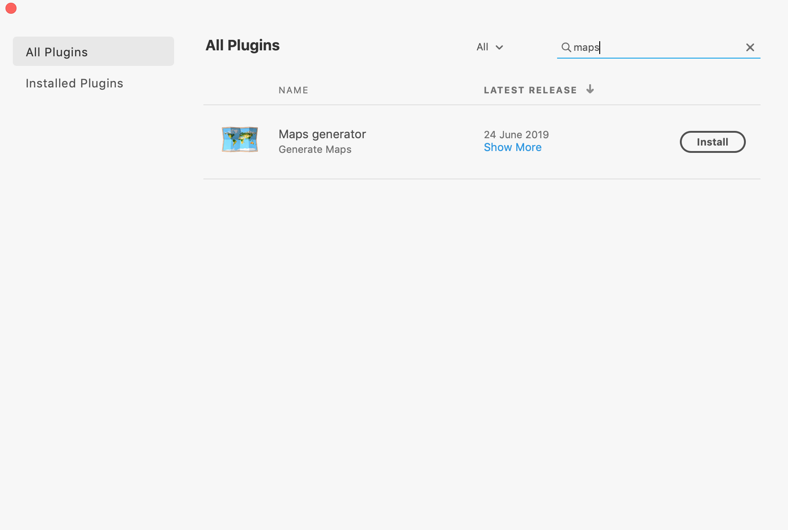

Maps generator
An Adobe XD plugin
Maps generator
An Adobe XD plugin
What It Does?
Maps Generator lets you insert deeply customisable maps in your design with just a few clicks using the google maps API. You can change the zoom level, map type and even add custom styles.
How to Install?
Go to Manage Plugins and search for "Maps Generator" or click here
How to Use?
Change Map Type and Adjust Zoom Levels
You can change map type to any of the following types - Roadmap, terrain, satellite and hybrid. You can also choose a zoom level from 1 - 20.
Add custom styles
You can even add custom styles to deeply customise your map. Take a look at Snazzy Maps which provides a lot of custom map styles
Disable default location pin if you want to add your own custom pin
You can enable/disable the default location pin provided by google maps.
What is the meaning of the ERRORs?
Selection Error
This means that you have to select one or more layers and then invoke the plugin.
As of now, the supported layers are:-
There are errors in styles JSON
This means that there are some errors in parsing of the styles JSON. Please check whether you have entered a valid JSON.